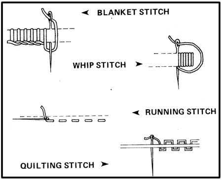
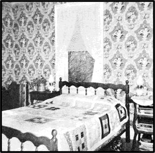
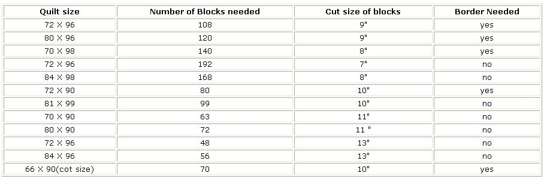

This article honors a gift handed down to us by the pioneer women of our country a skill conceived in poverty, pride, and love and considered by some to be the only true American folk art.
I'm talking about quilting, the craft of taking what you have and piecing it together into a blanket a craft which-sooner or later-naturally evolves into the more complex art of combining odd pieces of fabric into intricate patterns and designs.
I got started on this delightful pastime in the traditional way: I had eight beds to cover warmly and few funds to do it with. My only assets were a big bag of scraps and the memory of Mom and Gram piecing material for quilts when I was a child.
Since I'm a strong believer in the public library, that's where I went for help and I recommend that you do the same. Glorious works have been published on the subject of quilting, and references to designs for the coverlets abound in all the folk history and antique books. Also, if there's a historical museum or landmark house near you, visit it and copy down in a notebook the quilting ideas and patterns you're sure to find there.
It's odd that, among all the wealth of available reference material, I've never found a basic manual to show me step by step how to make a quilt. The fact remains that I haven't and my first attempt-a nine-block design, of which there are more variations than minds to think them up-is known accordingly as "Comedy of Errors".
I did everything wrong on my first attempt at quilting and then learned later how I should have done it. And that's why I've written this article: Amateur though I may be, even after several quilts, I still think I can save other beginners some trouble. Mainly, however, I hope to whet your appetite for, and pass on the great tradition of, this craft (as moms and grannies used to do).
just what is a quilt, anyway? Webster defines it as "a cover, or coverlet, made by stitching one cloth over another with some soft substance in between." And there are, basically, three kinds: patchwork, applique, and piecework.
Patchwork is "crazy quilting" piecing together in random pattern any scraps of fabric you might have on hand and finishing the whole with decorative embroidery stitches. The result is beautiful in spite of itself. This kind of work originated several hundred years ago among the peasants of France and had a poor reputation with our early settlers, who did very little of it. Nowadays it's an especially good use for wools, velvets, fur, or other odds and ends that you can't do anything else with.
Applique coverlets are made by stitching fancy designs onto a backing of solid material and then padding and quilting the whole thing. These days the makings are often embroidered blocks, all cut out and packed up into kits but early coverlets of this type were ornamented with pieces of fabric that were carefully shaped, often puff-quilted (a rather special technique), and stitched by ladies of old in their drawing rooms, as only they could do it.
Piecework-what most of us now do-produces the type of quilting best suited to today's purpose: that of using what we have and recycling discarded goods. The scraps of fabric used in piecework are all geometrical and uniform in shape and size. (Designs based on the square and the triangle work out best.)
People have always named their quilts, and still do with phrases that reflect their own times, politics, lifestyle, or what have you. When you browse through books on the subject you run across such designs as "Wheel of Fortune", "Odd Fellow's Path", "Storm-at-Sea", "Drunkard's Path", "Flying Geese", "Robbing Peter to Pay Paul", "Old Maid's Ramble", "Duck's Foot in the Mud", "Crown of Thorns", "Log Cabin" (a very popular pattern), and on and on through an endless list.
Maybe you'd like to try this old craft but lack the well-filled ragbag of yesteryear. In that case, where do you get the raw materials for a quilt? Everywhere! Ask a grandma or try the door-to-door approach or the tell a neighbor your 'remaking a quilt method (which always produces more cloth than you know what to do with). Or scrounge leftovers from the Goodwill. Or check with fabric manufacturers (although they may make a small charge for their remnants). Or drop in anywhere sewing is done. City dwellers, for instance, may find themselves near a tailoring shop, the alterations department of a store, or a clothing manufacturer. (You'll wind up with a lot of knit goods this way, and I'd love to hear what you do with them.)
|
 |
 |
 |